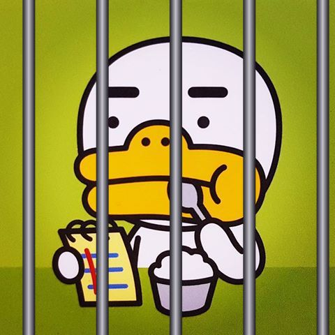

| Nah.. try hard!! |
-------------\/-------------

<?php # Solve me If you can!
session_start();
include dirname(__FILE__).'/config.php';
$url = $_GET['url'];
unset($_SESSION['fail']);
if (!$_SESSION['success'] && str_replace('debu', '', substr($url, 0, 19-1)) !== 'http://debu.kr/') $_SESSION['fail'] = true;
if ($_SESSION['fail'] && strpos(str_replace('tt', '', $url), 'http://debu.kr/') !== false) $_SESSION['fail'] = false;
if ($_SESSION['fail']) $_SESSION['success'] = false;
if (!$_SESSION['fail']) $_SESSION['success'] = true;
if (!$url) $_SESSION['success'] = false;
if (substr_count($url, 'http://debu.kr') <= 1 && parse_url($url)['host'] != 'debu.kr' && strpos($url, 'http://debu.kr/') !== false) $_SESSION['success'] = true;
if (file_get_contents($url) !== 'want_to_escape_from_here') $_SESSION['success'] = false;
if (!(strpos($url, 'http://debu.kr') !== false)) $_SESSION['success'] = false;
if (!preg_match("/^http:\/\/debu\.kr/is", $url)) $_SESSION['success'] = false;
if (!preg_match("/^http:\/\//is", $url)) $_SESSION['success'] = false;
if (is_bool($url) && is_array($url)) $_SESSION['success'] = true;
if ($_SESSION['success']) echo $flag;
if (!$_SESSION['success']) echo $fail;
show_source(__FILE__);
unset($_SESSION['success']);
?>